风梭
快速接应 · 灵巧窄轮廓
技能足球 · 活泼卡通手绘 2.5D。看得见表情，也看得见人物与场景的厚度。
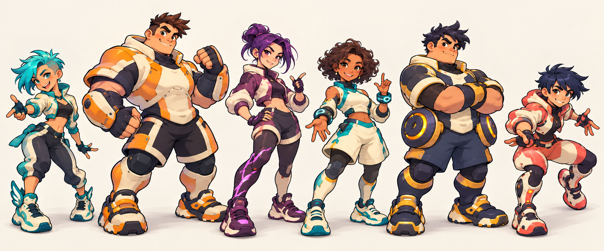
夸张头手与运动鞋，保留各自轮廓，用表情和姿态体现性格。
看见座椅、花池、围栏和球门侧面；地面标线随纵深压缩。
独立脚底阴影与贴地队伍标记，服装颜色不决定队伍。
按相同逻辑位置展示角色与球。新版采用 55° 正交斜俯视的投影提案，左右球门保持平行；PNG 倾角为视觉样稿。
脸部与身体侧面可见，统一采用上左暖光。下方按可见主体显示 64px / 96px 缩略，检查真实缩小后的轮廓。本区为静态单帧；六角动作另见动画播放器。
快速接应 · 灵巧窄轮廓
身体防守 · 宽体型与圆护具
远射与曲线球 · 紫色射门靴
球、球门、阴影和队伍标记采用可编辑 SVG。场地线与球门分别保存，可在上方独立开关。
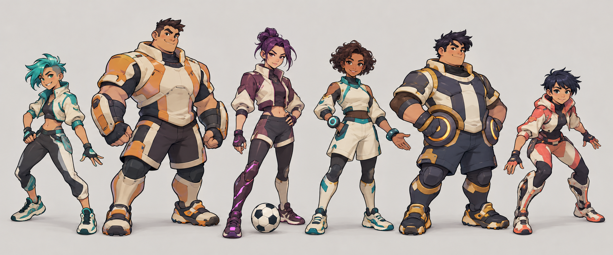
保留现有可编辑 SVG 草稿。技能仍按设计文档评审，图标后续随正式技能定稿调整。
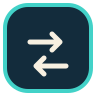
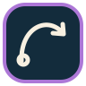
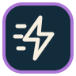
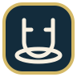
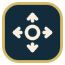
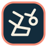
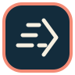
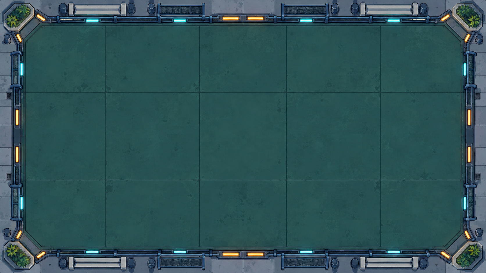
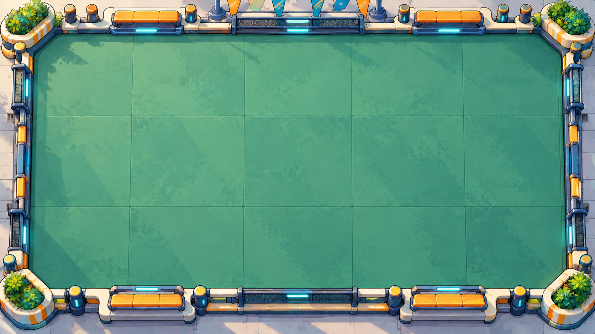
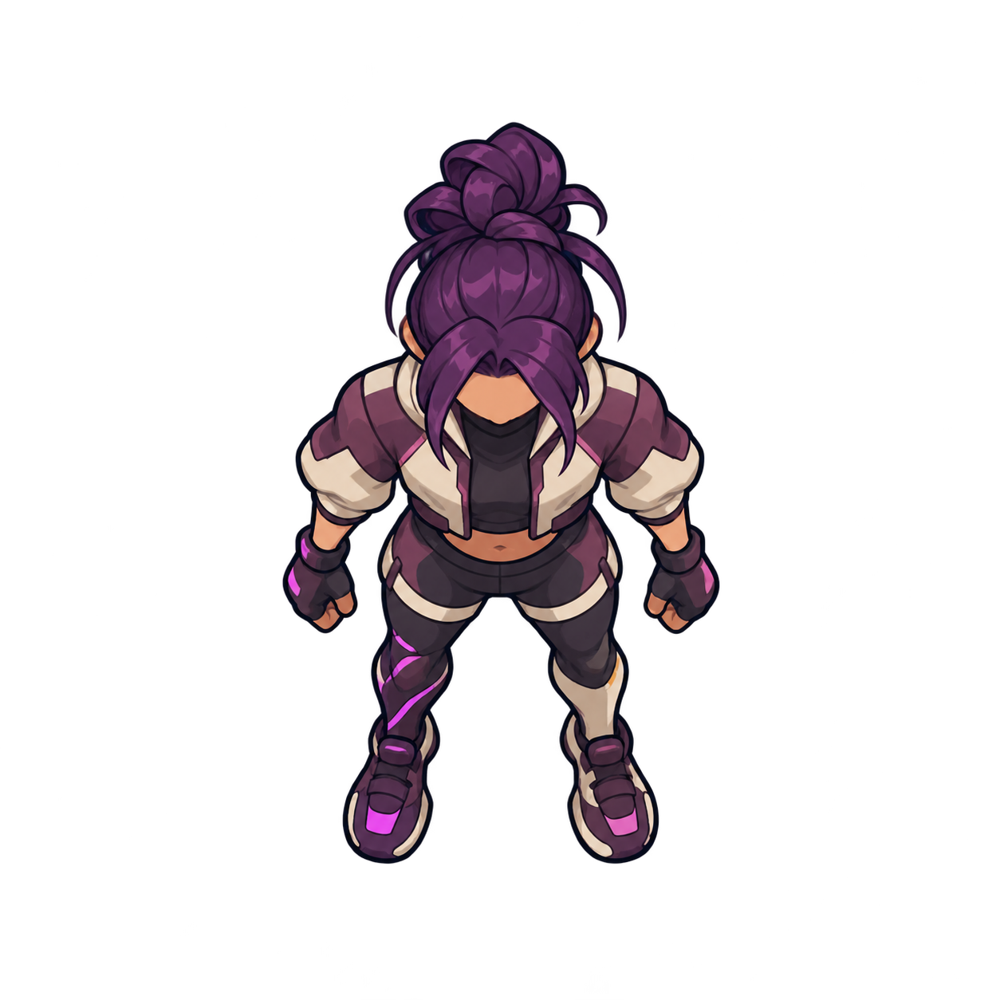
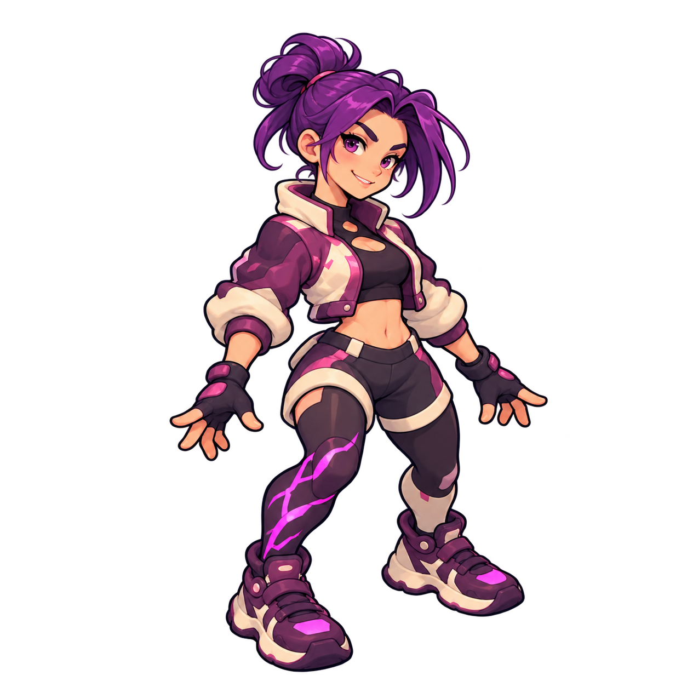
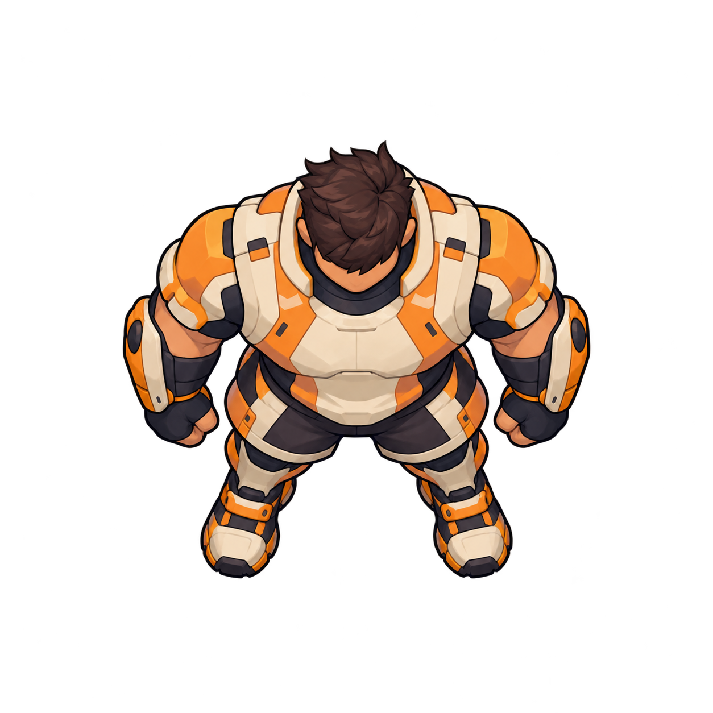
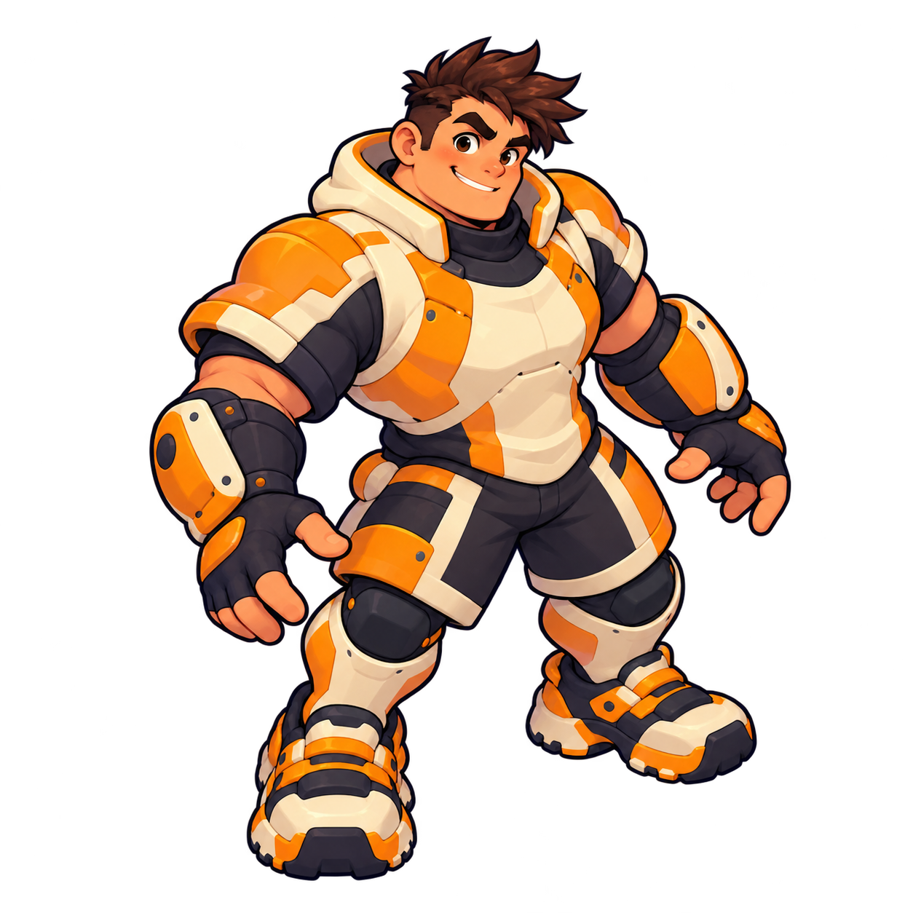
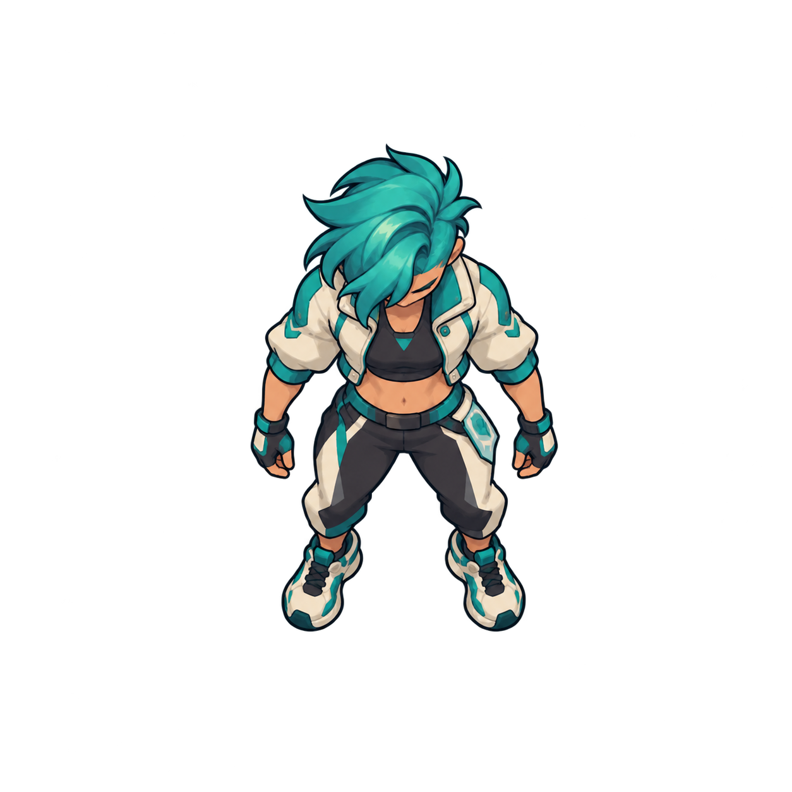
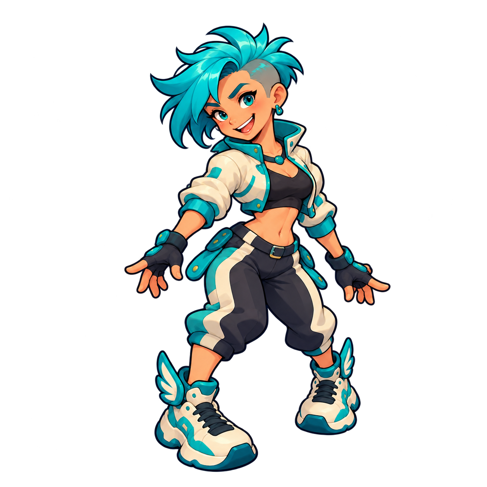
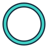